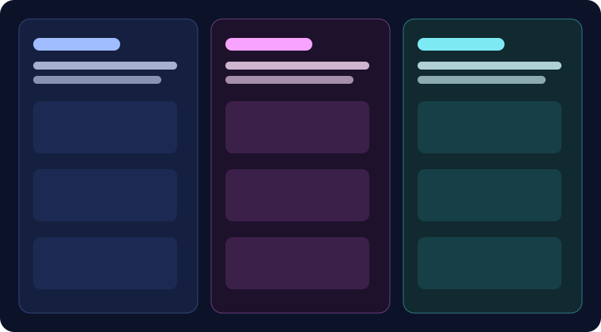
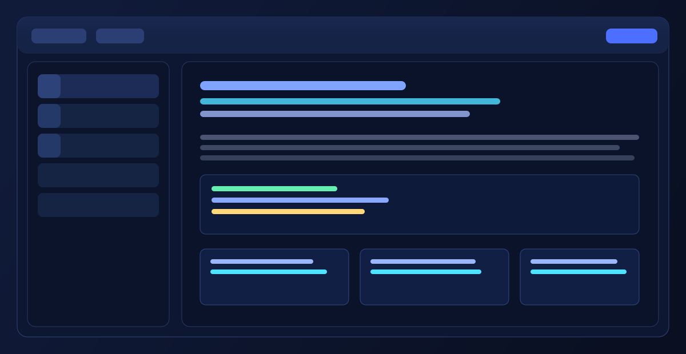
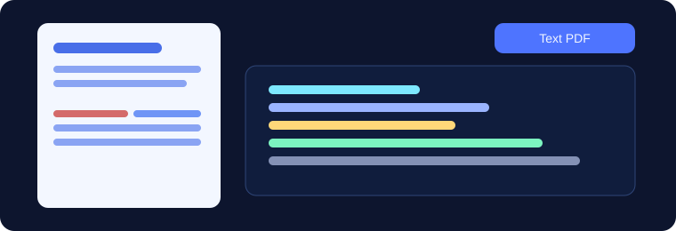

可视化样式控制 + 主题系统
字号、文字颜色、背景高亮、粗体、斜体、链接、inline code 在同一套编辑体验下即时生效。 你还可以通过模板和自定义 CSS 打造“炫酷”或“温和”的风格，满足个人写作与团队品牌规范。
PerfectMD 融合了 Typora 式的沉浸编辑与现代产品叙事体验： 文字大小、颜色与背景高亮即时可调，代码和公式自然融入写作流程， 并支持文本级 PDF 导出，真正从草稿走到交付。

聚焦真正影响体验和效率的功能，而不是堆参数。

字号、文字颜色、背景高亮、粗体、斜体、链接、inline code 在同一套编辑体验下即时生效。 你还可以通过模板和自定义 CSS 打造“炫酷”或“温和”的风格，满足个人写作与团队品牌规范。
本地优先、启动迅速、交互干净。把复杂留给功能，把注意力还给内容。

导出后的 PDF 支持文本复制，适合评审、汇报、归档与分享，不再是“截图式文档”。
代码块语言高亮、公式编辑、目录结构、文档置顶与检索，覆盖技术文档常见场景。
macOS（Intel / Apple Silicon）、Windows、Linux 全平台可用，团队协作更顺畅。
围绕“写得快、改得顺、交付稳”设计的一条创作路径。
用富文本方式写 Markdown，减少语法噪音，保留结构化表达。
通过主题与样式建立统一视觉，文档从草稿到成品一步到位。
导出 Markdown / PDF 给同事、客户、社区，兼顾可读性与可传播性。
从个人笔记到团队文档库，PerfectMD 帮你用更现代、更顺手的方式完成 Markdown 创作。